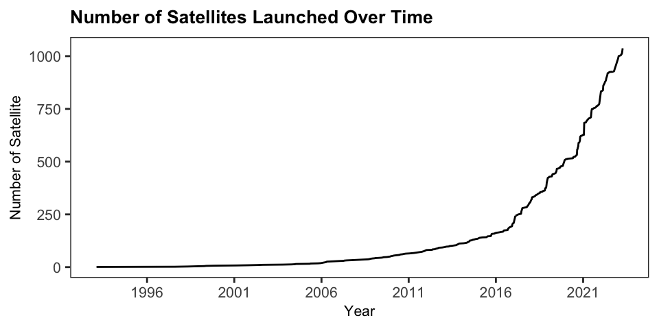

2 Background
Remote Sensing
In the broadest sense, remote sensing involves acquiring information about an object or phenomenon without direct contact (Campbell & Wynne, 2011). More specifically, remote sensing refers to gathering data about land or water surfaces using sensors mounted on aerial or satellite platforms that record electromagnetic radiation reflected or emitted from the Earth’s surface (Campbell & Wynne, 2011, p. 6). The origins of remote sensing lie with the development of photography in the 19th century, with the earliest aerial or Earth Observation photographs taken with cameras mounted on balloons, kites, pigeons, and aeroplanes. (Burke et al., 2021; Campbell & Wynne, 2011, p. 7). The first mass use of remote sensing was during World War I with aerial photography. The modern era of satellite-based remote sensing started with the launch of Landsat 1 in 1972, the first satellite specifically designed for Earth Observation (Campbell & Wynne, 2011, p. 15). Today, remote sensing technology enables frequent and systematic collection of data about the Earth’s surface with global coverage, revolutionizing our ability to monitor and analyze the Earth’s surface (Burke et al., 2021; NASA, 2019). As of May 2023, roughly 1039 active nonmilitary Earth Observation satellites are in orbit; 51% were launched in 2020 (UCS, 2021).
Sensors on remote sensing devices such as satellites measure electromagnetic radiation reflected by objects on the Earth’s surface. This is done in two different ways: passive and active. Passive sensors rely on natural energy sources, like sunlight, to record incident energy reflected off the Earth’s surface. While active sensors generate their own energy, which is emitted and then measured as it reflects back from with the Earth’s surface (NASA, 2019).

Components of the Earth’s surface have different spectral signatures — i.e., reflect, absorb, or transmit energy in different amounts and wavelengths (Campbell & Wynne, 2011). Remote sensing devices have several sensors that measure specific ranges of wavelengths in the electromagnetic spectrum; these are referred to as spectral bands (e.g. visible light, infrared, or ultraviolet radiation) (NASA, 2019; SEOS, 2014). By capturing information from particular bands the spectral signatures of surfaces can be used to identify objects on the ground. Figure 2.3 illustrates the differences between the spectral signatures of soil, green vegetation, and water across various wavelengths. The grey bands in the figure represent the specific spectral bands on the Landsat TM satellite (SEOS, 2014). The distinct reflectance properties of each material within these bands enable the differentiation of surface materials, making it possible to identify different land cover types. This information can be used directly for classification, or it can be combined into indices—such as the Normalized Difference Vegetation Index (NDVI)—to enhance the detection of specific features like vegetation health and coverage (Campbell & Wynne, 2011; NASA, 2019). The \(NDVI\) uses red light and near-infrared (NIR) —given by \(\frac{NIR - Red}{NIR + Red}\) — to distinguish green vegetation. Higher \(NDVI\) values indicate green vegetation as more red light is absorbed, whereas lower values correspond to non-vegetated areas where more red light is reflected.

Machine Learning
Machine learning techniques such as neural networks, random forests, and support vector machines have long been applied for spatial data analysis and geographic modeling (Haddaway et al., 2022; Lavallin & Downs, 2021). Compared to using indices alone, machine learning techniques enhance the accuracy and efficiency of data analysis and interpretation processes making it possible to analyze large volumes of data effectively. Which is particularly useful for handling the high complexity and dimensionality of remote sencing data. In recent years, the application of machine learning techniques in remote sensing has surged, driven by the increasing availability of large datasets and advancements in computational power (UN-GGIM:Europe, 2019; Y. Zhang et al., 2022). These machine learning models can be grouped into four main types according to the aims of analyses: classification, clustering, regression, and dimension reduction. Table 2.1 describes this grouping as well as giving examples. It is important to note that recent trends in machine learning and remote sensing analyses use hybrid or ensemble approaches using a combination of these groups (UN-GGIM:Europe, 2019). For a thorough review of these methods see UN-GGIM:Europe (2019).
| Analysis aim | Explanation |
|---|---|
| Classification | Assigning objects to known classes based on input variables. For example, categorizing pixels in an image into crop types using a model trained on known data. |
| Regression | Predict a numeric (discrete or continuous) response variable based on input variables, similar to classification but with numeric outputs. An example is predicting crop yield from Earch Observation image data. |
| Clustering | Groups objects based on input variables without pre-defined classes, identifying similarities among the objects. This can help in grouping pixels in an image for further inspection. |
| Dimension reduction | Reduces a large set of variables to a smaller set that retains most of the original information. This can simplify analysis or generate new variables like indices (e.g., Vegetation Index) for interpretation. |
| Note: | |
| Adapted from UN-GGIM:Europe (2019) and Haddaway et al.(2022). |
To verify these analyses performance metrics are used. For classification tasks, this involves creating a confusion matrix — a cross-tabulation of class labels assigned to model predictions and reference data (ground truth). In a confusion matrix the correctly classified instances are on the diagonal, and the off-diagonal cells indicate which classes are confused (i.e., are incorrectly classified). In remote sensing applications, accuracy assessments are undertaken on a pixel, group of pixels (e.g. block), or an object level (Stehman & Foody, 2019).
| Reference | Class 1 | Class 2 | Class 3 | Class 4 | Total | Producer's accuracy |
|---|---|---|---|---|---|---|
| Class 1 | $m_{11}$ | $m_{12}$ | $m_{13}$ | $m_{14}$ | $m_{1.}$ | $m_{11}/m_{1.}$ |
| Class 2 | $m_{21}$ | $m_{22}$ | $m_{23}$ | $m_{24}$ | $m_{2.}$ | $m_{22}/m_{2.}$ |
| Class 3 | $m_{31}$ | $m_{32}$ | $m_{33}$ | $m_{33}$ | $m_{3.}$ | $m_{33}/m_{3.}$ |
| Class 4 | $m_{41}$ | $m_{42}$ | $m_{43}$ | $m_{44}$ | $m_{4.}$ | $m_{44}/m_{4.}$ |
| Total | $m_{.1}$ | $m_{.2}$ | $m_{.3}$ | $m_{.4}$ | $m$ | |
| User's accuracy | $m_{11}/m_{.1}$ | $m_{22}/m_{.2}$ | $m_{33}/m_{.3}$ | $m_{44}/m_{.4}$ | ||
| Note: | ||||||
| Confusion matrix for a classification with four classes, where the rows ($r$) represent the reference (observed) classification and the columns ($c$) represent the predicted classes. $m_{rc}$ is the number of instances predicted in reference class $r$ and predicted class $c$, and $m$ is the total number of instances (i.e., the number of pixels/objects classified). |
From this matrix, performance measures such as overall accuracy are derived (FAO, 2016; Stehman & Foody, 2019; UN-GGIM:Europe, 2019). Where the overall accuracy is the total number of successful classifications, \(s\) over total number of instances, \(m\).
\[ \text{Overall Accuracy (OA)} = \frac{\sum^q_{r=1}m_{rr}}{m}= \frac{s}{m} \tag{2.1}\]
If the unit of accuracy assessment is a pixel, then overall accuracy is the proportion of pixels classified correctly. Other metrics include the reliability (User’s accuracy) and sensitivity (recall or Producer’s accuracy). Reliability is the correct classifications for a particular class divided by the column total (\(m_{.c}\)) and sensitivity is correct classifications over the row total (\(m_{r.}\)). It is important to consider the purpose of the map when evaluating its accuracy, as overall accuracy may not reflect the accuracy of specific classes. Factors such as sample size, class stability, class proportions, and landscape variability influence the overall accuracy (FAO, 2016; see UN-GGIM:Europe, 2019).
Australia Land Cover Mapping
To illustrate how remote sensing data and machine leaning can be used to support ecological sustainable development, Owers et al. (2022) developed an approach to monitor and map land cover across Australia using techniques. Their study utilized Landsat sensor data archive through Digital Earth Australia to generate annual land cover maps from 1988 to 2020 at a 25-meter resolution. The study used random forest and artificial neural networks to classify individual pixels according to the FAO’s Land Cover Classification System (LCCS) framework.
To produce such maps using a topographical field survey is impractical, given Australia’s size (\(7,688,287 \text{ km}^2\)). While field surveys are the most accurate method of generating training sample data, they are labor-intensive, time-consuming, and expensive (C. Zhang & Li, 2022). A topographical survey of just 20 hectares (\(0.2 \text{ km}^2\)) takes a team of four people approximately five days to complete, even though the resulting topographical map would have a high resolution of 0.5 meters (L.A. Mbila, personal communication, January 26, 2024). In Owers et al. (2022), experts visually inspected the satellite imagery to validate the training and test data. While this is a less labor-intensive, costly and time-consuming than field surveys it still requires significant effort and expertise.
In contrast to the challenges associated with field surveys, remote sensing provides an efficient method for the continuous monitoring of large areas that would otherwise be inaccessible (Owers et al., 2022; C. Zhang & Li, 2022). Thefore, the potential applications are numerous. Examples include monitoring of land use and degradation, forestry, biodiversity, agriculture, disaster prediction, water resources, public health, urban planning, poverty, and the management and preservation of world heritage sites (Anshuka et al., 2019; Campbell & Wynne, 2011; Ekmen & Kocaman, 2024; O. Hall et al., 2023; Lavallin & Downs, 2021; Maso et al., 2023).
Previous Reviews
Numerous studies have previously examined the application of remote sensing for SDG monitoring. However, existing reviews are typically either limited to specific contexts, such as the use of satellite data for poverty estimation (O. Hall et al., 2023) or focus on descriptive results (see Yin et al., 2023). The existing reviews either apply methodology that aligns more closely with Synthesis Without Meta-Analysis (Campbell et al., 2020) —for example, Thapa et al. (2023) and Ekmen & Kocaman (2024) — or apply unweighted meta-analysis techniques, such as Khatami et al. (2016) and O. Hall et al. (2023) ). In unweighted meta-analysis all studies are treated equally regardless of their sample size, quality, or variance (J. A. Hall & Rosenthal, 2018). However, it is more common in traditional applications of meta-analysis, to use the sample sizes when aggregating individual studies (J. A. Hall & Rosenthal, 2018). However, to my knowledge, no examples of a weighted meta-analysis applied to predictive performance in remote sensing data have been conduced, highlighting a gap that this study aims to address.